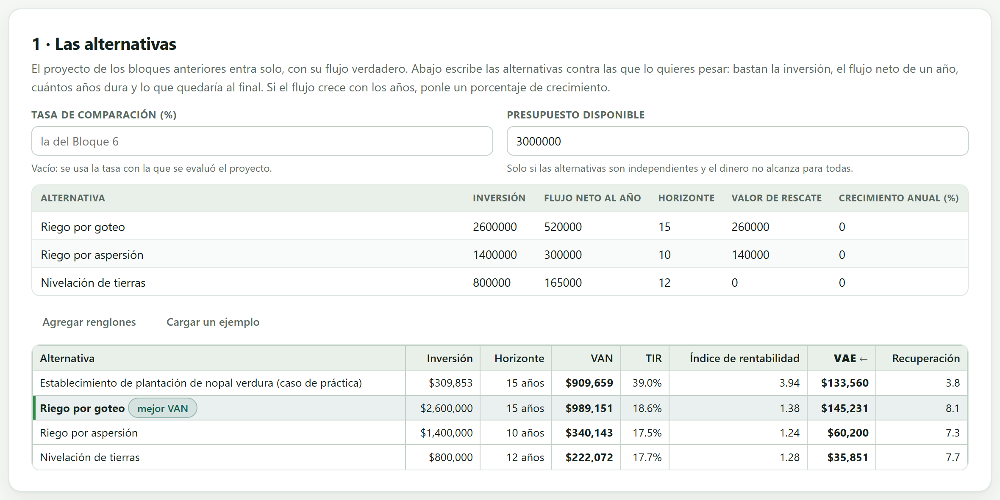
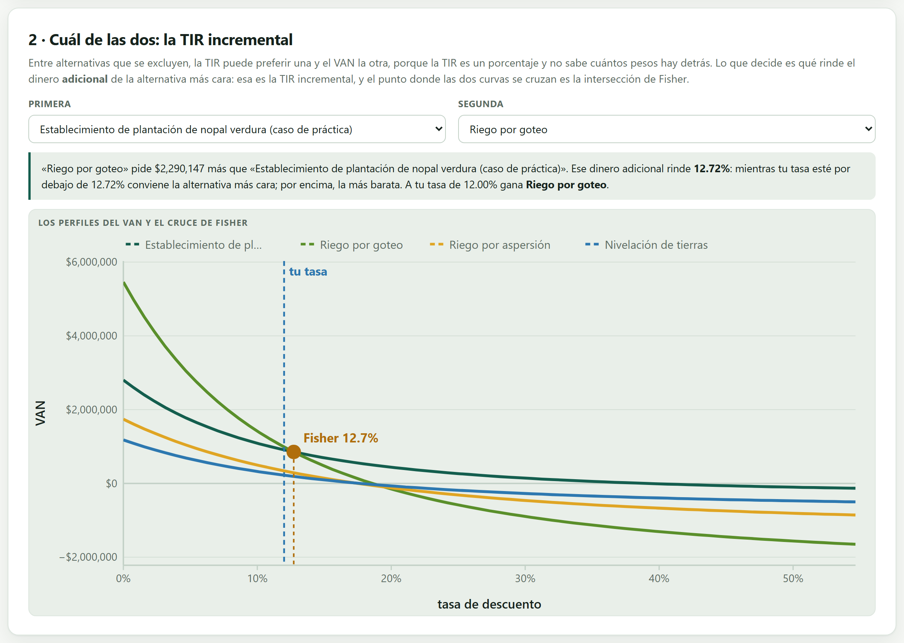
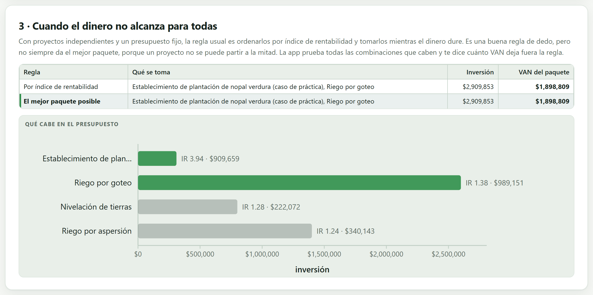
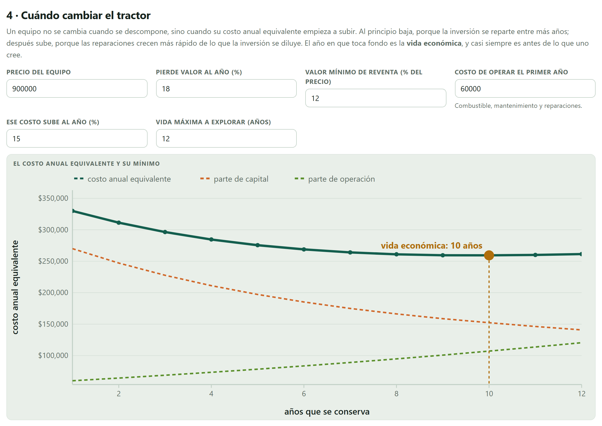
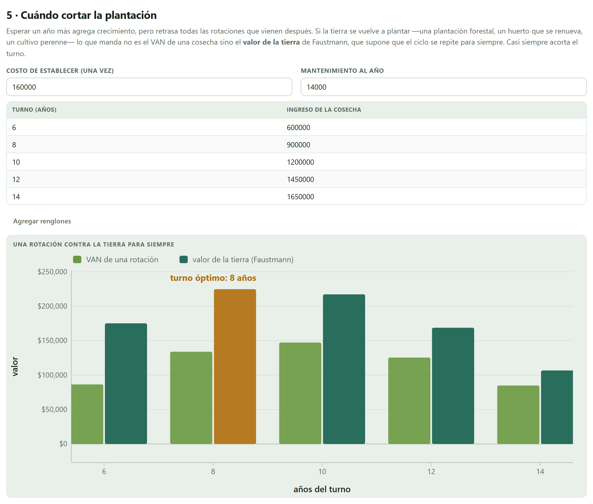
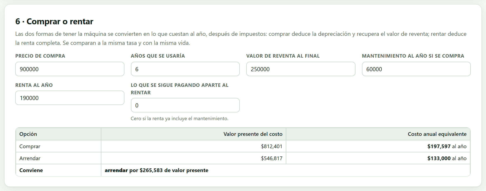

Los ocho bloques anteriores contestaron si el proyecto conviene. Este contesta las preguntas que vienen después y que casi ningún estudio resuelve bien: cuál de varias alternativas, cómo comparar cosas que duran distinto, qué hacer cuando el dinero no alcanza para todas, cuándo cambiar la máquina, cuándo cortar la plantación y si conviene comprar o rentar.
Un VAN positivo dice que el proyecto vale la pena, no que sea lo mejor que se puede hacer con ese dinero. Este bloque mete el proyecto de los bloques anteriores —con su flujo verdadero, no con un resumen— en una lista junto a otras alternativas y las pesa a todas con la misma tasa.
Lo que no hace es pedir un estudio completo de cada alternativa. Para entrar a la comparación bastan cuatro cifras: la inversión, el flujo neto de un año, cuántos años dura y lo que quedaría al final. Eso es deliberado: si para comparar hubiera que formular cinco proyectos enteros, nadie compararía nada y la decisión se tomaría a ojo, que es exactamente lo que este bloque quiere evitar.
El capítulo usa el caso de práctica del Nopal verdura en Milpa Alta —el proyecto limpio, sin gestación— contra las tres obras de riego que trae el botón Cargar un ejemplo. Todas se comparan a la tasa del 12.00 % con la que se evaluó el nopal en el Bloque 6.
La primera tarjeta tiene arriba la hoja donde se escriben las alternativas y abajo la tabla con sus seis indicadores. El proyecto aparece siempre, sin escribirlo.

| Alternativa | Inversión | Años | VAN | TIR | IR | VAE |
|---|---|---|---|---|---|---|
| Nopal (el proyecto) | $309,853 | 15 | $909,659 | 39.0 % | 3.94 | $133,560 |
| Riego por goteo | $2,600,000 | 15 | $989,151 | 18.6 % | 1.38 | $145,231 |
| Riego por aspersión | $1,400,000 | 10 | $340,143 | 17.5 % | 1.24 | $60,200 |
| Nivelación de tierras | $800,000 | 12 | $222,072 | 17.7 % | 1.28 | $35,851 |
El VAN prefiere el riego por goteo; la TIR y el índice de rentabilidad prefieren el nopal, y por mucho. No es que un indicador esté mal calculado: es el desacuerdo clásico entre proyectos de tamaños muy distintos, y se resuelve en la sección 9.4.
La TIR es un porcentaje y no sabe cuántos pesos hay detrás. El nopal rinde 39 % sobre $309,853; el goteo rinde 18.6 % sobre $2,600,000. Preferir el 39 % equivale a decir que vale más ganar mucho sobre poco que poco sobre mucho, y eso solo es cierto si el dinero que sobra se puede invertir igual de bien en otra cosa.
Lo mismo pasa con el índice de rentabilidad, que es un cociente. Por eso, entre alternativas que se excluyen —no se puede hacer las dos—, la regla es el VAN o el valor anual equivalente; el índice de rentabilidad sirve para otra cosa, que es repartir un presupuesto entre proyectos independientes (sección 9.5).
En el ejemplo hay tres duraciones: 10, 12 y 15 años. La app lo detecta y marca la columna del valor anual equivalente, porque comparar los VAN de proyectos que duran distinto no significa nada.
Un VAN de $340,143 en diez años y uno de $222,072 en doce no son comparables: el primero deja libre la tierra y el dinero dos años antes, y ese tiempo vale. Compararlos directamente es como comparar dos salarios sin decir si son por semana o por quincena.
La solución no es alargar a mano el más corto ni recortar el más largo: es convertir cada VAN en la anualidad equivalente que lo produciría a lo largo de su propia vida, y comparar anualidades.
El VAE reparte el VAN en pagos iguales a lo largo del horizonte, con el factor de recuperación del capital:
Supone implícitamente que el proyecto se repite al terminar, que es el supuesto razonable cuando se trata de una obra o un equipo que habrá que reponer. Si el proyecto no se repite —una concesión que vence, una plantación que no se vuelve a sembrar—, entonces hay que igualar los horizontes de otra manera y decirlo.
En este ejemplo no lo cambia: el goteo gana por VAN ($989,151) y también por VAE ($145,231), y la aspersión queda arriba de la nivelación por los dos caminos. Que coincidan es buena noticia, no una razón para no calcular el VAE: solo se sabe que coinciden después de calcularlo.
El veredicto sí se voltea cuando el proyecto de VAN más alto es también el más largo. Una obra de veinte años con un VAN de $1,000,000 al 12 % da un VAE de $133,879, y una de ocho años con un VAN de $600,000 da $120,782: gana la primera. Pero si la corta valiera $700,000, su VAE sería de $140,912 y ganaría ella, con $300,000 menos de VAN.
La segunda tarjeta resuelve el desacuerdo de frente: toma dos alternativas y pregunta qué rinde el dinero adicional que pide la más cara.

«Riego por goteo pide $2,290,147 más que el establecimiento de la plantación de nopal. Ese dinero adicional rinde 12.72 %: mientras tu tasa esté por debajo de 12.72 % conviene la alternativa más cara; por encima, la más barata. A tu tasa de 12.00 % gana Riego por goteo.»
Esa es la respuesta completa, y cabe en tres renglones. El margen, eso sí, es estrecho: entre el 12.00 % que se está usando y el 12.72 % del cruce hay setenta y dos centésimas de punto. Si la tasa del proyecto se defendiera un poco más alta, el veredicto se voltearía; eso hay que decirlo en la tesis, no esconderlo.
La TIR incremental es la tasa que hace cero el VAN de la diferencia entre los dos flujos: lo que cuesta de más contra lo que deja de más. Geométricamente es el punto donde los dos perfiles del VAN se cruzan, y por eso se llama intersección de Fisher.
La regla es directa: si la TIR incremental supera a la tasa de descuento, el dinero adicional se paga solo y conviene la alternativa cara; si no la supera, ese dinero rinde menos de lo que cuesta y conviene la barata, que a esa tasa es además la de mayor VAN. Las dos reglas —el VAN y la TIR incremental— siempre dan el mismo veredicto: la segunda solo lo explica mejor, porque dice en qué condición se sostiene.
Las secciones anteriores suponen que las alternativas se excluyen. La tercera tarjeta supone lo contrario: son independientes, se podrían hacer varias, y lo que falta es dinero.

Con presupuesto limitado, la regla clásica es ordenar los proyectos por índice de rentabilidad —VAN por peso invertido— y tomarlos de arriba hacia abajo mientras el dinero dure. Es una buena regla de dedo y funciona perfecto cuando los proyectos son divisibles.
El problema es que un proyecto no se puede partir a la mitad. Cuando el último que cabe deja un sobrante grande, a veces conviene saltárselo y tomar dos más pequeños que juntos rinden más. Por eso la app no se conforma con la regla: prueba todas las combinaciones que caben en el presupuesto —hasta 18 alternativas— y reporta cuánto VAN deja la regla sobre la mesa.
| Regla | Qué se toma | Inversión | VAN del paquete |
|---|---|---|---|
| Por índice de rentabilidad | nopal + riego por goteo | $2,909,853 | $1,898,809 |
| El mejor paquete posible | nopal + riego por goteo | $2,909,853 | $1,898,809 |
Los dos caminos dan el mismo paquete y la app no escribe ninguna advertencia. Eso se comprueba, no se supone: con otro presupuesto la respuesta puede diferir, y cuando difiere la app dice exactamente cuántos pesos de VAN cuesta seguir la regla de dedo.
Las tarjetas 2 y 3 contestan preguntas opuestas y la app no puede adivinar cuál aplica. Si las alternativas son formas distintas de hacer lo mismo —regar por goteo o por aspersión—, se excluyen y manda la tarjeta 2. Si son obras distintas que podrían convivir —nivelar y además nivelar otra parcela—, son independientes y manda la tarjeta 3. Mezclarlas produce paquetes imposibles.
La cuarta tarjeta contesta una pregunta que en el campo se resuelve por costumbre: cuántos años conservar un equipo. La respuesta no es «hasta que se descomponga».

La vida útil es cuántos años aguanta la máquina; la vida económica es cuántos años conviene tenerla. Son dos cosas distintas y casi siempre la segunda es más corta.
El costo anual equivalente de conservar un equipo n años tiene dos partes que se mueven en contra. La parte de capital —lo que se pagó menos lo que se recupera al venderlo, repartido entre los años— baja, porque la inversión se diluye. La parte de operación —combustible, mantenimiento, reparaciones— sube, porque una máquina vieja cuesta más tenerla andando. La suma baja primero y sube después, y el año en que toca fondo es la vida económica.
Pierde el 18 % de su valor al año hasta un piso del 12 % del precio; operarlo cuesta $60,000 el primer año y ese costo sube 15 % al año.
| Años | Valor de reventa | Parte de capital | Parte de operación | Costo anual equivalente |
|---|---|---|---|---|
| 1 | $738,000 | $270,000 | $60,000 | $330,000 |
| 5 | $333,666 | $197,147 | $78,395 | $275,541 |
| 9 | $150,858 | $158,701 | $100,814 | $259,515 |
| 10 | $123,703 | $152,237 | $107,097 | $259,334 |
| 11 | $108,000 | $146,345 | $113,664 | $260,009 |
| 12 | $108,000 | $140,818 | $120,521 | $261,339 |
La vida económica es de 10 años, con un costo de $259,334 al año. Nótese lo plano que está el fondo: entre el año 9 y el 11 la diferencia es de menos de $700 al año, medio punto porcentual. Eso también es un resultado, y uno tranquilizador: la decisión no es delicada, y quien conserve el tractor un año de más no comete un error caro.
La quinta tarjeta es la versión forestal y frutícola de la misma idea, y tiene una vuelta de tuerca que sorprende a casi todos.

Establecerla cuesta $160,000 una vez y mantenerla $14,000 al año.
| Turno | Cosecha | Cosecha por año | VAN de una rotación | Valor de la tierra |
|---|---|---|---|---|
| 6 | $600,000 | $100,000 | $86,419 | $175,161 |
| 8 | $900,000 | $112,500 | $133,948 | $224,701 |
| 10 | $1,200,000 | $120,000 | $147,265 | $217,196 |
| 12 | $1,450,000 | $120,833 | $125,458 | $168,779 |
| 14 | $1,650,000 | $117,857 | $84,828 | $106,651 |
El turno que maximiza el VAN de una cosecha es el de 10 años; el que maximiza el valor de la tierra, si se vuelve a plantar, es el de 8. Dos años de diferencia sobre la misma plantación, y la respuesta correcta depende por entero de si la tierra se vuelve a usar.
Martin Faustmann lo planteó en 1849 y sigue siendo la referencia. La idea: si la tierra se vuelve a plantar en cuanto se corta, esperar un año más no solo agrega crecimiento, también retrasa todas las rotaciones que vienen después, para siempre. Ese costo de oportunidad no aparece en el VAN de una sola cosecha.
Como el divisor es menor que 1, el valor de la tierra siempre es mayor que el VAN de una rotación; y como crece más rápido para los turnos cortos, el óptimo se adelanta. La regla práctica: cuando la plantación se repite, se corta antes de lo que diría el VAN.
La sexta tarjeta convierte las dos formas de tener una máquina en lo que cuestan al año, después de impuestos, a la misma tasa y con la misma vida.

Comprarla deja una reventa de $250,000 y cuesta $60,000 al año de mantenimiento; rentarla cuesta $190,000 al año con el mantenimiento incluido.
| Opción | Valor presente del costo | Costo anual equivalente |
|---|---|---|
| Comprar | $812,401 | $197,597 |
| Arrendar | $546,817 | $133,000 |
Conviene arrendar, por $265,583 de valor presente. Y hay un detalle que conviene entender: el costo anual equivalente de arrendar, $133,000, es exactamente la renta de $190,000 menos el 30 % de impuesto que se deduce. Tenía que salir así —una serie de pagos iguales tiene como anualidad equivalente el propio pago— y sirve para comprobar que la cuenta está bien hecha.
| Opción | Lo que cuenta |
|---|---|
| Comprar | el desembolso completo el año cero; menos el impuesto que ahorra la depreciación cada año; más el mantenimiento, ya descontado su efecto fiscal; menos lo que se recupera al venderla. |
| Arrendar | la renta de cada año, deducible completa, más lo que se siga pagando aparte si la renta no incluye el mantenimiento. |
Dos advertencias. La primera: aquí no aparece el crédito, porque comparar «comprar con préstamo» contra «rentar» mezcla la decisión de tener la máquina con la de cómo financiarla; esa segunda decisión es del Bloque 5. La segunda: lo que decide no es el ahorro fiscal sino quién usa mejor la máquina; si va a estar parada ocho meses al año, rentarla gana por razones que ningún cálculo fiscal alcanza a expresar.
La última tarjeta reúne lo que el bloque encontró. En este ejemplo escribe cinco mensajes, y los cinco son el capítulo entero en resumen.
«Las alternativas duran distinto (10, 12, 15 años): comparar sus VAN no significa nada. Usa el valor anual equivalente, que es la columna marcada.»
«El VAN prefiere Riego por goteo y la TIR prefiere el establecimiento de la plantación de nopal: es el desacuerdo clásico entre proyectos de distinto tamaño. Mira la TIR incremental de abajo.»
«Invertir los $2,290,147 de más de Riego por goteo rinde 12.72 %: conviene mientras tu tasa esté por debajo de eso.»
«La vida económica del equipo es de 10 años, con un costo anual equivalente de $259,334. Conservarlo más tiempo sale más caro por año de servicio.»
«El turno que maximiza el VAN de una sola rotación es de 10 años, pero el que maximiza el valor de la tierra es de 8: cuando la plantación se repite, conviene cortar antes.»
| Clase | Lo que revisa |
|---|---|
| Advertencia | Las alternativas duran distinto y hay que usar el valor anual equivalente; la regla del índice de rentabilidad deja VAN sobre la mesa frente al mejor paquete posible. |
| Nota | El VAN y la TIR prefieren alternativas distintas; cuánto rinde el dinero adicional de la más cara; cuál es la vida económica del equipo y su costo anual; en qué turno conviene cortar según se repita o no la plantación; si conviene comprar o arrendar y por cuánto. |
| Si las alternativas se excluyen y duran lo mismo | entonces manda el VAN, y la TIR incremental lo explica. |
| Si se excluyen y duran distinto | entonces manda el valor anual equivalente, y hay que decir que se supone repetición. |
| Si son independientes y el dinero no alcanza | entonces ordena por índice de rentabilidad y comprueba contra el mejor paquete posible. |
| Si la pregunta es cuántos años conservar un equipo | entonces es el mínimo del costo anual equivalente, no la vida útil del fabricante. |
| Si la plantación se vuelve a sembrar | entonces el turno óptimo es el de Faustmann, que es más corto que el del VAN. |
| Si comparas comprar contra rentar | entonces hazlo después de impuestos, a la misma vida y sin meter el crédito. |
Aquí termina el análisis. El Bloque 10 no agrega un cálculo más: recoge todo lo que se hizo, lo convierte en figuras publicables, en un informe que se lee solo y en un paquete que permite a otro repetir el estudio.